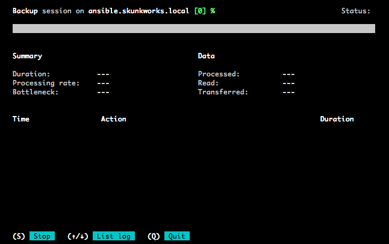

Veeam Agent for Linux (Beta)
BlogCompartilhe esse post nas redes sociais...
Olá Homelabers!
A Veeam acabou de divulgar a sua nova ferramenta de backup de EndPoints voltada para Linux (isso mesmo, TELAPRETA™), chamada Veeam Agent for Linux.
O Veeam Agent for Linux será uma ferramenta gratuita (FREE AS IN BEER) assim, como o seu irmão mais velho Veeam Endpoint Backup (para Windows).
Quer dizer, era… até agora.
Apresentamos Veeam® Agent for Linux — um agente de backup GRATUITO e simples para Linux, desenvolvido para garantir a disponibilidade das suas instâncias de servidor Linux, estejam residindo localmente ou na nuvem pública.
A interface do produto é bastante simples e minimalista e está disponível para distribuições** Debian** e **Red Hat**, com pacotes .deb e .rpm.

Para baixar o software, você deve se registrar no programa BETA e aguardar ser chamado. O processo é first in, first out, ou seja, quem chegar primeiro, recebe primeiro. Então corra para se registrar!
Características do Produto:
* Backup do computador todo ou backup por volume (com suporte a múltiplos jobs).
* Recuperação Bare Metal, por volume ou por arquivo (recuperação granular)
* Backup de instâncias do Linux em execução na nuvem ou em instalações on-premises
* Realizar no local restaura a partir de backups de instâncias de nuvem individuais, ou restaurações nuvem de backups no local
* Integração com o [**Veeam Backup e Replication**](https://www.veeam.com/br/vm-backup-recovery-replication-software.html) (não nessa versão Beta)
* Controlador proprietário, sem dependência de snapshots LVM
Requisitos do Sistema:
* Sistemas operacionais 32 e 64 bits com kernel Linux 2.6 ou superior
* Red Hat Enterprise Linux (RHEL) e seus derivados (CentOS, etc)
* Debian e seus derivador (Ubuntu, etc)
* Mínimo de 1GB de memória RAM
* Espaço em disco de 60MB + espaço livre no /tmp para snapshot enquanto o backup estiver sendo realizado
Eu acredito que esse produto será tão bacana quanto a sua versão para Windows, tanto para usuários domésticos como para pequenas empresas que estão sempre procurando por uma solução de backup grátis e confiável.
A Veeam já tem bastante tempo de janela e tem um dos melhores produtos de backup para soluções virtualizadas, então vale a pena ficar de olho nesse produto.
Registre-se hoje mesmo para o BETA nesse link e aguarde ser chamado. Eu já fiz o meu registro. Assim que eu receber o convite, farei um post mais completo sobre o software.
É isso ai pessoal! Até a próxima!
Compartilhe esse post nas redes sociais...Valdecir Carvalho
Nerd e pai orgulhoso da Mariana e João. Profissional Sênior de TI com foco em arquitetura de infraestrutura e cloud computing. Blogueiro, podcaster, palestrante, amante de comunidades técnicas, fotógrafo aposentado e adora jogos antigos.
#vExpert · #VMUGLeader · #VUGBrasil · #vBronwBagBrasil · #VeeamVanguard